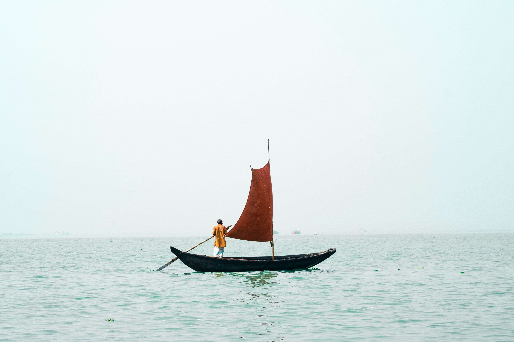

<!doctype html>
<html lang="en">
     <head>
     <meta charset="UTF-8">
     <meta http-equiv="x-UA-compat:
     <meta name="viewport" content="width=device=width, initial-scale=1.0">
     <title>home</title> 
     <link rel="styleshet" href="css/style.css">
    </body>
    </html>
    <h2>Bangladesh</h2>
    <p>Bangladesh, country of South Asia, located in the delta of the Padma (Ganges [Ganga]) and Jamuna (Brahmaputra) rivers in the northeastern part of the Indian .</p>
    <h3>History</h3>

   <h4>Although Bangladesh has existed as an independent country only since the late 20th century, its national character within a broader South Asian context dates to the ancient past. The country’s history, then, is intertwined with that of India, Pakistan, and other countries of the area. The land of Bangladesh, mainly a delta formed by the Padma (Ganges [Ganga]) and the Jamuna (Brahmaputra) rivers in the northeastern portion of the Indian subcontinent, is protected by forests to the west and a myriad of watercourses in the centre. As such, it was long the inaccessible frontier beyond the north Indian plain and therefore was home to a distinctive regional culture. In early times a number of independent principalities flourished in the region—called Bengal—including Gangaridai, Vanga, Gauda, Pundra, and Samatata, among others. In the 14th century Shamsuddin Ilyas Shah was instrumental in unifying many of these principalities. The Mughals added more territories, including Bihar and Orissa (now states of India), to constitute Suba Bangalah, which the British colonial administration later called the Bengal Presidency. In 1947, when British colonial rule ended, a downsized province of Bengal was partitioned into East Bengal and West Bengal. East Bengal was renamed</h4>
   <a Bhref="pages/about.html">About</a> 
   <H5>Bangladesh is Located in the north-eastern part of South Asia. The majestic Himalayas stand some distance to the north, while in the south lays the Bay of Bengal. West Bengal borders on the west and in the east lies the hilly and forested regions of Tripura, Mizoram (India) and Myanmar. These picturesque geographical boundaries frame a low lying plain of about 1,47,570 square kilometer, criss-crossed by innumerable rivers and streams. Mighty rivers are Padma (Ganges), Brahmaputra (Jamuna), Meghna and Karnafuli.
   Bangladesh offers many tourist attractions, including archaeological sites, historical mosques and monuments, longest natural beach in the world, picturesque landscape, hill forests and wildlife, rolling tea gardens and tribes. The rich flora and fauna and colorful tribal life is very enchanting. Each part of the country offers distinctly different topography, flavors and delicacies. It is home to the Royal Bengal Tiger, freshwater pink dolphins, historical temples made of red earth.</H5>
   
   <address>
   written by <a href="mailto:webmaster@example">priyanka saha</a>.<br>
   visit us at:<br>
   Example.com<br>
   Badda Dhaka
</address>
   <a href="https://www.facebook.com/saha.priyanka.92/">Facebook profile</a>


</body>
</html>